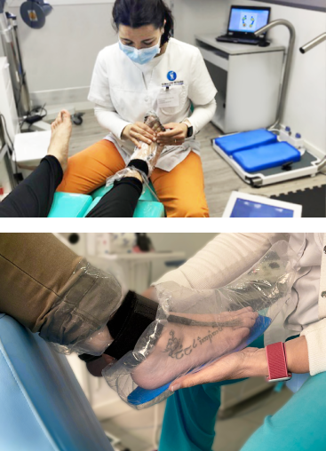
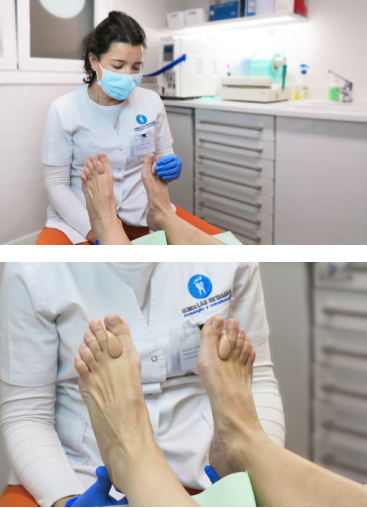
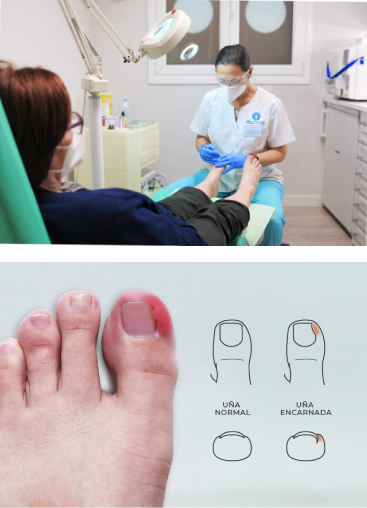
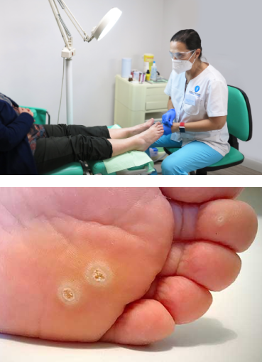

Servicios de Podología
Tratamientos especializados para el cuidado integral de tus pies
Plantillas Ortopédicas
Diseñamos ortesis personalizadas adaptadas a las necesidades específicas de cada paciente, utilizando materiales de alta calidad y tecnología avanzada.
Nuestras plantillas ortopédicas proporcionan el soporte y la corrección necesaria para mejorar la biomecánica del pie y aliviar el dolor, tanto en actividades deportivas como en el día a día.

Ortosis de Silicona
Los podólogos utilizamos mucho las ortosis de silicona personalizadas para la infinidad de patologías: corrección de dedos en garra o mal formados, prevención de juanete, protección de zonas de roce o presión, etc.
Su versatilidad y sencillez hace que sea un tratamiento muy bien acogido y con grandes resultados.

Tratamiento de Uñas Encarnadas
La uña encarnada es una patología muy frecuente en nuestra consulta. Existen diferentes grados de afectación y por tanto diferentes tipos de tratamientos.
En muchas ocasiones y aunque el paciente acuda con dolor, podemos reeducar la uña y curarla en una sesión sin dolor. En otras ocasiones pueden tener un nacimiento irregular o estar en un proceso infeccioso de manera que la solución es realizar una cirugía.
Estas se realizan con anestesia local y deambulación inmediata, no precisa reposo ni toma de calmantes.

Tratamiento de Papilomas
Los papilomas son unas lesiones dermatológicas que pueden aparecer desde la niñez. Al tratarse de un virus, es importante consultarlo pronto y tener unas nociones básicas de su posibilidad de contagio.
Existen muchas maneras de curarlos, pero siempre escogemos tratamientos que sean indoloros (sean niños o adultos), que no dejen secuelas ni cicatrices y que permitan seguir realizando vida normal tanto laboral como deportiva desde la primera sesión.

Servicios: